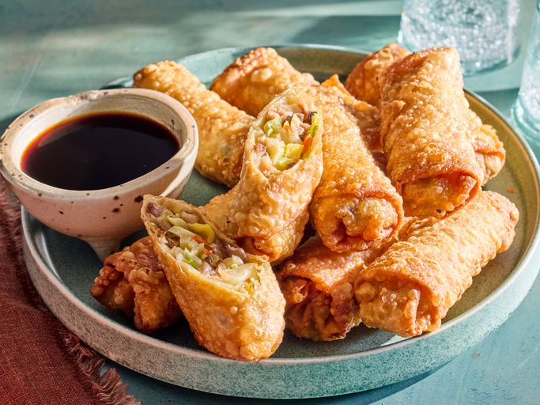

Chinese Egg Rolls

300 year old authentic recipe of Chinese Egg Rolls
Ingredients
- 4 teaspoons vegatable oil, divided
- 3 large eggs, beaten
- 1 medium head cabbage, finely shredded
- 1/2 carrot, julienned
- 1 pound Chinese barbequed or roasted pork, cut into matchsticks
- 1 (8 ounce) can shredded bamboo shoots
- 1 cup dried, shredded wood ear mushroom, rehydrated
- 2 green onions, thinly sliced
- 2 1/2 teaspoons soy sauce
- 1 teaspoon salt
- 1 teaspoon sugar
- 1/2 teaspoon monosodium glutamate (MSG)
- 1 (14 ounce) package egg roll wrappers
- 1 egg white, beaten
- 4 cups of frying oil, or as needed
Directions
- Heat 1 teaspoon vegetable oil in a wok or large skillet over medium heat. Pour in beaten eggs and cook, without stirring, until firmed up.
Flip eggs over and cook for an additional 20 seconds to firm the other side. Set egg pancake aside to cool, then slice into thin strips.
- Heat remaining vegetable oil in a wok or large skillet over high heat. Stir in cabbage and carrot; cook for 2 minutes to wilt. Add pork, bamboo
shoots, mushroom, green onions, soy sauce, salt, sugar, and MSG; continue cooking until vegetables soften, about 6 minutes. Stir in sliced egg, then
spread the mixture out onto a pan, and refrigerate until cold, about 1 hour.
- To assemble egg rolls.: Place wrapper onto your work surface with one corner poiting towards you. Place about 3 tablespoons of cooled filling in a heap
onto the bottom third of the wrapper. Brush a little beaten egg white onto the top two edges of the wrapper, then fold the bottom corner over the filling
and roll firmly to the halfway point. Fold the left and right sides snugly over the egg roll, then continue rilling until the top corners seal the egg
roll with the egg white. Repeat with the remaining egg roll wrappers, covering finished egg rolls with plastic wrap to keep from drying out.
- Heat about 6 inches of oil in a wok or deep-fryer to 350 degrees F (175 degrees C).
- Fry eggs rolls 3 or 4 at a time until golden brown, 5 to 7 minutes. Drain on paper towels.
Recipe Homepage